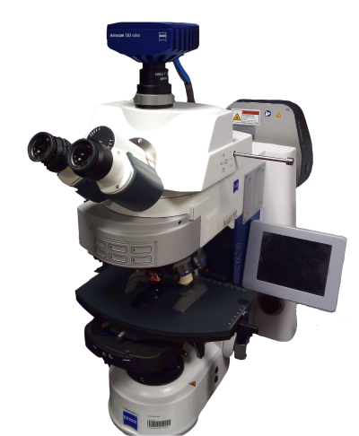

This motorised upright
widefield fluorescence microscope is equipped with a broad range of
objective lenses, including water dipping lenses, a colour camera and
LED lamps for transmitted light and epifluorescence imaging.
Available
techniques:
- Transmitted light imaging (brightfield)
- Widefield multi-channel fluorescence imaging
Objectives:
- EC Plan-Neofluar 5x/0.16 dry, FWD 18.5 mm, CG 0.17
- EC Plan-Neofluar 10x/0.3 dry, FWD 5.2 mm, CG 0.17
- LD Plan-Neofluar 20x/0.4 dry, FWD 8.4-7.4 mm, CG 0-1.5 mm
- N-Achroplan 40x/0.75 water dipping, FWD 2.1 mm, CG -
- N-Achroplan 63x/0.9 water dipping, FWD 2.4 mm, CG -
- EC Plan-Neofluar 63x/1.25 oil, FWD 0.1 mm, CG 0.17 mm
[FWD = free workg distance, CG = cover glass]
Fluorescence
excitation sources:
- Colibri 7 LED lamp (excitation filters: 385/30; 423/44; 469/38;
511/44; 555/30; 590/27; 631/33)
Filter sets:
- Quad-band cube (QBS 405 + 493 + 575 + 653; QBP
425/30+514/30+592/25+709/100)
- Triple-band cube (TBS 450+538+610; TBP 467/24+555/25+687/145)
- CFP (455 LP; 480/40)
- YFP (515 LP; 535/30)
Detectors and cameras:
- Axiocam 503 colour camera (1936x1460 pixels, 4.54 µm/pixel)
Software:
Other features:
- Manual stage
- Motorised filter turret
| Usage fees [SGD/hour] |
LKCMed |
NTU |
Others (Academia/Industry) |
| 0 |
0 |
30 / 48 |
| Location |
EMB 04-02Y, Zebrafish facility (apply
for card access) |
| Contact |
nobic.facilities@e.ntu.edu.sg |
BACK TO TOP